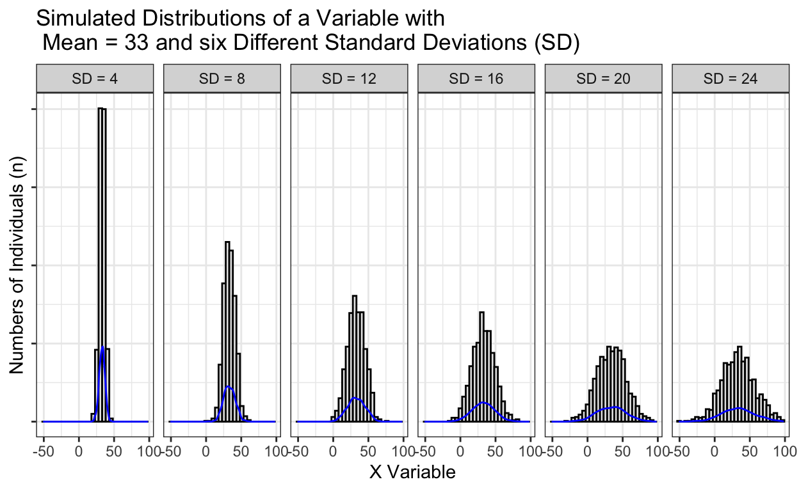
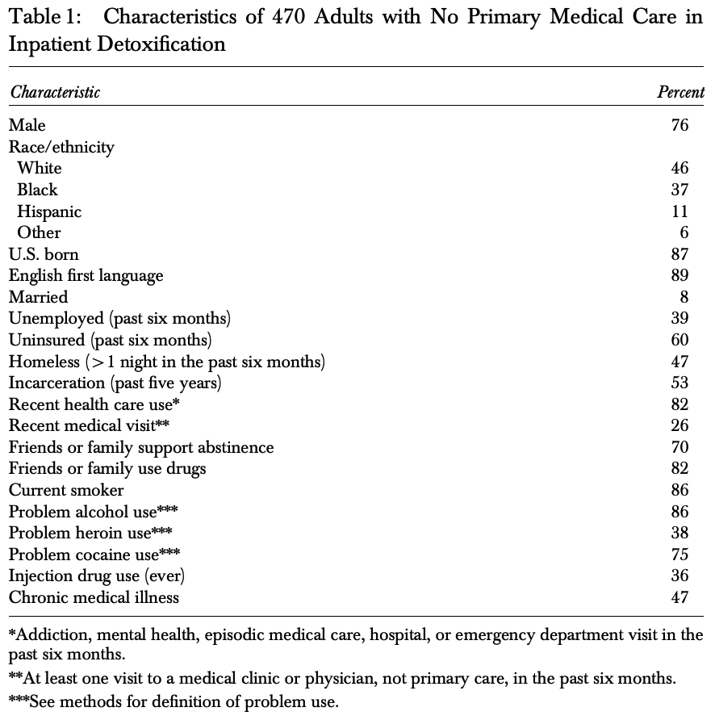
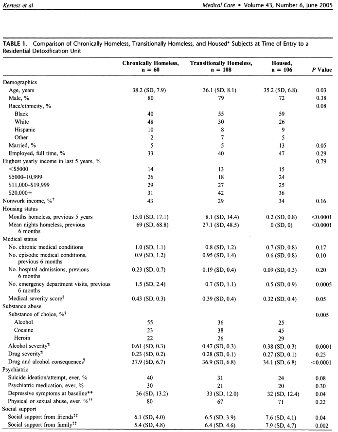

1. Introduction
Most empirical, quantitative data analyses start with exploratory data analysis. Similarly, the results section of most empirical papers with quantitative data report summary statistics that characterize their sample across a variety of measures & variables. These are related concepts – exploratory data analysis, and univariate statistics – but each has a distinct meaning and use.
In a secondary data analysis, exploratory data analysis usually comes when using the data for the first time and wanting to understand distributions and frequencies of the variables (and sometimes basic relationships between two variables) in the data. This step might highlight additional necessary data cleaning, generate additional or alternative hypotheses, or just give some initial exposure to the particular dataset and sample population’s responses.
The presentation of univariate statistics in a secondary data analysis likely comes a little later, once a clear set of dependent, independent, and potential confounding variables have been identified. Most commonly, these univariate statistics include means / frequencies and standard deviations / percentages that are calculated for all independent variables and potential confounding variables and organized in the first table of the results section of the paper.
In this tutorial, we will focus on how to do both tasks: exploratory data analysis through numerical and visual summaries of the data, and how to calculate and organize tables of univariate statistics that might be included in Table 1 of the paper.
2. The Data
We will continue using the HELPrct dataset. Below is a list of variables with some information. Please note that this includes information on whether the variable is continuous or categorical (and see this resource if you feel you need a refresher on those terms).
| Variable Name | What the variable measures | Units | Continuous or Categorical? |
|---|---|---|---|
age |
subject age at baseline | in years of age | Continuous |
anysub |
use of any substance post-detox | no, yes | Categorical, Binary |
cesd |
Center for Epidemiologic Studies Depression measure at baseline (high scores indicate more depressive symptoms) | # of depressive symptoms | Continuous |
e2b |
number of times in past 6 months entered a detox program (measured at baseline) | # of times | Continuous |
homeless |
binary measure of permanent housing status | housed, homeless | Categorical, Binary |
i1 |
average number of drinks (standard units) consumed per day, in the past 30 days (measured at baseline) | # of drinks | Continuous |
mcs |
SF-36 Mental Component Score (measured at baseline, lower scores indicate worse mental health quality of life status) | Score from 0-100 | Continuous |
pcs |
SF-36 Physical Component Score (measured at baseline, lower scores indicate worse physical health quality of life status) | Score from 0-100 | Continuous |
racegrp |
race/ethnicity: levels | black, hispanic, other, white | Categorical |
sex |
binary measure of sex/gender | male, female | Categorical, Binary |
substance |
primary substance of abuse | alcohol, cocaine, heroin | Categorical |
treat |
binary indicator: whether randomized to HELP clinic | no, yes | Categorical, Binary |
And we can look at basic statistics across all of the dataset with the summary() function.
summary(HELPrct)## age anysub cesd e2b homeless
## Min. :19.00 no : 56 Min. : 1.00 Min. : 1.000 homeless:209
## 1st Qu.:30.00 yes :190 1st Qu.:25.00 1st Qu.: 1.000 housed :244
## Median :35.00 NA's:207 Median :34.00 Median : 2.000
## Mean :35.65 Mean :32.85 Mean : 2.505
## 3rd Qu.:40.00 3rd Qu.:41.00 3rd Qu.: 3.000
## Max. :60.00 Max. :60.00 Max. :21.000
## NA's :239
## i1 mcs pcs racegrp sex
## Min. : 0.00 Min. : 6.763 Min. :14.07 black :211 female:107
## 1st Qu.: 3.00 1st Qu.:21.676 1st Qu.:40.38 hispanic: 50 male :346
## Median : 13.00 Median :28.602 Median :48.88 other : 26
## Mean : 17.91 Mean :31.677 Mean :48.05 white :166
## 3rd Qu.: 26.00 3rd Qu.:40.941 3rd Qu.:56.95
## Max. :142.00 Max. :62.175 Max. :74.81
##
## substance treat
## alcohol:177 no :228
## cocaine:152 yes:225
## heroin :124
##
##
##
## 3. Exploratory Data Analysis
The main goal of exploratory data analysis is to understand nuances of the variables in the dataset. Typically, this exploration is visual more than numeric, as the visual can help illustrate features like unusual values, the shapes of distributions, and beginning to explore the magnitude of associations between two variables or the size of the differences in one variable between groups. While this kind of data analysis rarely gets reported directly in empirical papers, this behind-the-scenes work more commonly is done to enhance the data analyst’s understanding of the data.
Visualizing distributions and frequencies
First, let’s start by visualizing one variable at a time.
For continuous variables, we are usually interested in the distribution of the data, particularly:
- the shape of the distribution (symmetrical or skewed, one peak in the distribution or two),
- the spread of the data (spread out or tight around the center),
- what the midpoint is of the distribution, and
- whether there are unusual values.
For categorical variables, we are usually interested in the frequencies of the data, particularly:
- how many people are in each category,
- what percent of the total sample is in a given category,
- whether there are enough people in each category to support hypothesis testing (i.e., enough statistical power to testing group differences).
Ex. 3.A: Visualizing Continuous Distributions
Let’s work first with age, a continuous variable. Below we’re going to plot this distribution as a histogram using the qplot(), or quick plot, function.
qplot(age, data=HELPrct)As we make sense of this distribution, we might want to consider things like which descriptive statistics (and measures of central tendency) provide meaningful information about this variable, and how we would summarize this distribution in a sentence.
It might be helpful to clarify what’s units are on the y-axis. Try adding a small addition to the code above to help make the units more obvious by labeling the y-axis (i.e., ylab) with the units.
qplot(age, ylab = "Number of participants (n)", data=HELPrct)Answer some questions below as you make sense of what you see. For reference, here are some depictions of the terms we’re considering when looking at distributions:

There’s no perfect answers here – it’s a bit subjective for sure. The point is more to be developing a facility with creating distributions in R and fluency with language to describe distributions.
Means and Standard Deviations
One of the things we are looking for here is where the mid-point of the distribution is (i.e., typically the mean or median) and another is how spread out the distribution is, which is reflected by the standard deviation.

Note the shape of the histogram (and replicated as a smoothed, density curve in blue at the base of the histogram) as the standard deviation (SD) changes. The smaller SD (on the left) shows very tall bar heights of the histogram, and very little vertical spread; in other words, most of the data are distributed pretty closely around the mean (i.e., a small standard deviation). The total range is about 25. As the SD increases across the plots to the right, you likely notice lower vertical height (fewer individuals at a given value of X) and more vertical spread (there are people at more different values of X). The total range is closer to 125.
This is all simply to illustrate visually what we will show numerically with the mean and SD in Table 1 later on: the mid point of the distribution and its standard deviation are really informative for characterizing the shape of the distribution of a given variable.
Coding Exercise 3.A – Your Turn!
Choose another continuous variable from the data and make another plot. Since we have looked at cesd in previous tutorials, let’s use that. Use the code from the examples with age as a model, and substitute cesd instead of age.
qplot()qplot(cesd, data=HELPrct)qplot(cesd, ylab = "Number of participants (n)", data=HELPrct)Also, consider how you might summarize the output in a sentence or two based on the criteria we have discussed above:
- the shape of the distribution (symmetrical or skewed, one peak in the distribution or two),
- the spread of the data (spread out or tight around the center),
- what the midpoint is of the distribution, and
- whether there are unusual values.
Example 3, Part B - Visualizing categorical variables
We can use the same coding process (i.e., qplot()) from above for categorical variables. Instead of a histogram with a smoothed distribution across the continuous x-axis, this code will generate a bar chart with the numbers of individuals in each particular group of the categorical variable along the x-axis.
Since this intervention focused on particular types of substance use given their detox facilities, let’s work with the substance variable.
Example 3.B
qplot(x=substance,ylab = "Number of participants (n)", data=HELPrct)One thing about this graph is the trade-off between the absolute size of the bars (i.e., the actual number of people) and the relative size (i.e., the percent of the total that bar represents). Numerically, we will often show both, as you’ll see later with Table 1. You can do the same with these visualizations, just with some additional coding that we won’t get into at the moment. But, based on that final question above – wouldn’t it have been handy to have had that percentage given to you rather than you having to do the work to understand the graph?
Coding Exercise 3.B
Your turn! Choose another categorical variable from the dataset to practice with.
| Variable Name | What the variable measures | Units | Continuous or Categorical? |
|---|---|---|---|
anysub |
use of any substance post-detox | no, yes | Categorical, Binary |
homeless |
binary measure of permanent housing status | housed, homeless | Categorical, Binary |
racegrp |
race/ethnicity: levels | black, hispanic, other, white | Categorical |
sex |
binary measure of sex/gender | male, female | Categorical, Binary |
substance |
primary substance of abuse | alcohol, cocaine, heroin | Categorical |
treat |
binary indicator: whether randomized to HELP clinic | no, yes | Categorical, Binary |
qplot()qplot(..., data=HELPrct)qplot(..., ylab = "Number of individuals (n)", data=HELPrct)Now think about how you would characterize this visual depiction in words. Recall that for categorical variables, we are usually interested in the frequencies of the data, particularly:
- how many people are in each category,
- what percent of the total sample is in a given category,
- whether there are enough people in each category to support hypothesis testing (i.e., enough statistical power to testing group differences). Does any category of the variable you depicted have very few people in it?
Summary of Exploratory Data Analysis
We just worked on exploratory data analysis, a common and useful approach for beginning to understand and summarize the data in your dataset / sample. This exploration is typically done visually. Above, we used the qplot() function (which is part of the tidyverse we’ve mentioned before) to generate quick plots of these variables: histograms of continuous variables, and bar graphs of categorical variables. We also worked on how to understand and characterize these visual illustrations for the different variable types.
| Continuous | Categorical |
|---|---|
| the shape of the distribution (symmetrical or skewed one peak in the distribution or two) | how many people are in each category |
| the spread of the data (spread out or tight around the center) | what percent of the total sample is in a given category |
| what the midpoint is of the distribution | whether there are enough people in each category to support hypothesis testing (i.e., enough statistical power to testing group differences). Does any category of the variable you depicted have very few people in it? |
| whether there are unusual values |
4. Table of Univariate Statistics
Pieces of these exploratory data analyses are often presented first in the Results section of a paper, typically in a Table. This table serves a few purposes, namely:
- to characterize the sample and give the reader context about your particular sample
- to understand the range of values
- to inform how bivariate and multivariate statistical test results can be interpreted
These tables may include these summary characteristics across the entire sample, as in the example below from Saitz et al (2004):

or they may stratify the table to describe subgroups of the sample, often with a p-value from a bivariate test of whether the mean/frequencies were statistically significantly different between the groups as in the example below from Kertesz et al (2005):

It is worth noting that both of these examples come from papers from the HELP intervention study, whose data we are using.
Saitz, R., Larson, M. J., Horton, N. J., Winter, M., & Samet, J. H. (2004). Linkage with primary medical care in a prospective cohort of adults with addictions in inpatient detoxification: room for improvement. Health Services Research, 39(3), 587-606.
Kertesz, S. G., Larson, M. J., Horton, N. J., Winter, M., Saitz, R., & Samet, J. H. (2005). Homeless chronicity and health-related quality of life trajectories among adults with addictions. Medical care, 574-585.
However, you may recall having seen many examples previously of these sorts of tables – they are not specific to this study or data – because they are in fact very common. In this next section of the tutorial, we will build this type of tables in R. Like many things in R, there are many possible paths to the same destination – meaning, there are many ways to do effectively the same thing – and this will be one, though certainly not the only (and perhaps not even the best!), way to create this kind of table.
Univariate Table - Whole Sample
Let’s first replicate the first, simpler table where we summarize the whole sample at once. We have a slightly different sample size (the example table above included 17 people who aren’t in our data) and not all of the variables that they included, but we should get generally similar results.
The way we will do this is to use a package called tableone. As the name suggests, we aren’t the first people to want to construct this type of table in R, and in fact, this package is a great illustration of how within R’s open source framework, individuals can create packages to solve their particular needs and share those packages freely with other users.
Them stuck making Table 1 in R: 
Also Them after making tableone package: 
Ultimately, Us: 
Coding Exercise 4.A - Making a Univariate Table
library(tableone)
CreateTableOne(data=HELPrct)It may be that ultimately you don’t want to summarize every variable in the dataset. For example, maybe you know you’re never going to use the variable i1, which is the average number of drinks. There are small, additional pieces of code that could give you only the variables you want.
#get the names of all variables to omit the variables you don't want in the Table
dput(names(HELPrct))#save the variable names you want as a vector called HELPvars (excluding "i1")
HELPvars<-c("age", "anysub", "cesd","e2b", "homeless", "mcs", "pcs",
"racegrp", "sex", "substance", "treat")
CreateTableOne(vars=HELPvars, data=HELPrct)Similarly, maybe you would prefer to have more meaningful labels for the variables rather than variable names that are hard to understand, especially if you don’t know the data. There are also relatively small extensions of the code from above that could do that kind of formatting.
#save the variable names you want as a vector called HELPvars (excluding "i1")
HELPvars<-c("age", "anysub", "cesd","e2b", "homeless", "mcs", "pcs",
"racegrp", "sex", "substance", "treat")
# Make list of the variable labels you want to use for each variable
var_label_list <- list(age = "Age", anysub = "Post-detox substance use",
cesd = "CES-D", e2b = "Number of other detoxes in 6mo.",
homeless = "Homeless",
mcs = "Mental QOL", pcs = "Physical QOL",
racegrp = "Race/Ethnicity", sex = "Gender",
substance = "Substance for Current Detox", treat = "Intervention arm of Study")
#attach/assign the labels to the variables in the data
labelled::var_label(HELPrct) <- var_label_list
#Remake the table
print(CreateTableOne(vars=HELPvars, data=HELPrct), varLabels = TRUE)Looks much better! Now go back into the code above, define the units for age in variable label for age (years), and rerun the table for a complete, final version.
Coding Exercise 4.B - Making a Table Stratified by Another Variable
Now let’s work on creating the second, more complicated Table where the summary of the individual variables are calculated within different groups of the data. In other words, we may want to stratify the sample into groups and then characterize the people in the sample that are within that group. Moreover, we may want to test for differences in a given variable, like age, across these different groups. For example, are the people in detox units for alcohol older than those in detox units for cocaine? Is the average depression (CES-D score) higher for one substance group than another?
Most commonly, these kinds of tables are stratified by your main independent variable. For example, a study of sexual / gender minority health disparities in anxiety prevalence may stratify this table by sexual/gender minority status to articulate how individuals with sexual gender minoritorized identities differ compared to non-SGM identities.
Here, let’s stratify by the main substance for the participant’s detox, as reflected. We can do that by just adding a strata= "variable_name" clause in the previous commands.
#Take Substance out of the variable list and save it as HELPvars2
HELPvars2<-c("age", "anysub", "cesd","e2b", "homeless", "mcs", "pcs",
"racegrp", "sex", "treat")
print(CreateTableOne(vars=HELPvars2, strata= "substance", data=HELPrct), varLabels = TRUE)In fact, it does seem that individuals in detox for alcohol where roughly 4 years older than someone in detox for cocaine, and 5 years older than those in detox for heroin.
You may also notice that the default for a stratified table is to have conducted the relevant statistical tests (t-tests, ANOVA, or Chi-Square tests) and to have reported the p-value for each variable. Essentially, this is testing a hypothesis for each variable – are the people in detox units for alcohol older than those in detox units for cocaine? What about frequency of post-detox substance users, etc.If you wanted to suppress these tests, you could include test = FALSE to change it from the default of test = TRUE (R is case sensitive – be sure to use ALL CAPS for the TRUE/FALSE statements).
print(CreateTableOne(vars=HELPvars2, strata= "substance", data=HELPrct), varLabels = TRUE, test=FALSE)Summary of Creating Summary Tables of Descriptive Statistics
In this section, we saw examples from the original empirical papers from the HELP study that illustrated two different kinds of summary tables commonly reported in the Results section of a paper. One of these tables described the distributions of variables across the total sample, and the other stratified this table by an independent variable of interest. These tables can include hypothesis testing of differences in the variables across the stratified groups, though they do not have to.
We worked with the tableone package in R to construct similar tables for continuous and categorical variables. We worked through different options of how to include or exclude specific variables, how to create variable labels, how to stratify the table, and how to include/exclude the statistical tests from appearing in the table. We also worked through how to read the table and make sense of the results.
5. Knowledge Check
To practice one final time, you should make one additional exploratory data analysis visual and one additional table.
First, write the code to create a histogram of the Mental Health Quality of Life variable (mcs). For context, the scores of this variable range from 0 (worst quality of life) to 100 (best), and is centered at 50 for an “average” individual of the respondent’s age.
Let’s check to make sure you got the correct output:
Next, create a table stratified by whether the individual was in the intervention arm or not (treat).
Let’s check to make sure you got the correct output:
Bonus Points! (or whatever…)
Keep building the RMarkdown file from the last tutorial so that you have a record of all the code you’re learning and developing!
- Sign back into rstudio.smith.edu
- Reopen the RMarkdown file you used before (it should still be saved there)
- Copy and paste the code you wrote above from Exploratory Data Analysis & Table 1 to add to the existing file.
- Knit it again into a .pdf
- Send it to me to brag about what great work you’re doing!

6. Tutorial Summary
In this tutorial, we introduced exploratory data analysis and created visuals of the distribution of continuous and categorical variables. We also summarized these variables numerically in tables similar to ones you commonly see in the beginning of Results sections of an quantitative empirical paper. Great work!


7. Supplemental Reading
Want to learn more about exploratory data analysis or the tableone package? Below are some excellent supplemental readings. Both get quickly into the details of the coding such that they are [probably more (A)dvanced, and so we have marked each reading appropriately.
\(^A\)Wickham, H., & Grolemund, G. (2016). Exploratory Data Analysis. In R for data science: import, tidy, transform, visualize, and model data. (Chapter 7). O’Reilly Media, Inc.
- \(^A\)Yoshida, K. (2018, July 19). tableone (Lightning talk at Partners R User Group Meeting).